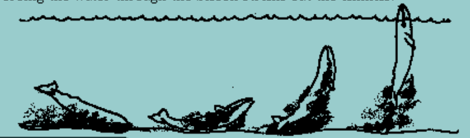

Feeding During the Journey
Most scientists agree that most gray whales feed very little during migration. They are known to stop to eat squid and to investigate other potential food.
Gray whales actually seem to eat a variety of foods. Scientists think the flexible feeding behavior of the gray whale is important for their survival. It may have helped them recover quickly from near extinction. Other whales which eat fewer kinds of food have been slower to increase in numbers.
A grey whale dives to the bottom and turns on its side to feed. There it bites chunks out of the mud or sand. The buried small shrimp-like animals are stirred up into the water. The whale sucks this water mixture into its mouth. Forcing the water through through baleen plates strains out the animals.
